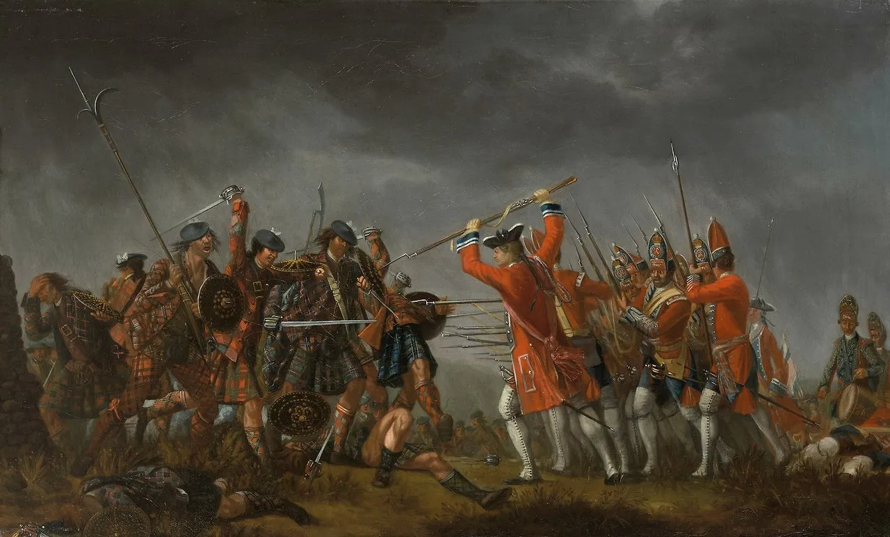

백파이프 불면 사형?

1688년 영국 명예혁명으로 폐위당한 제임스 2세를 지지하는 세력을 자코바이트Jacobite라고 합니다.
제임스 2세는 가톨릭 신자였기 때문에 잉글랜드와 사이가 험악한 스코틀랜드 하이랜드와 아일랜드에서 지지를 받았습니다. 국교회 잉글랜드는 가톨릭 자코바이트를 반역자로 보고 극단적으로 엄벌했죠.
자코바이트 봉기는 이후 백여 년에 걸쳐 영국에서 피바람을 부르는 뜨거운 불씨가 되었습니다.
이때 제정된 왕위계승법은 가톨릭 신자의 왕위 계승을 원천 차단하는데 이 법은 현재까지도 유효합니다.
또 아일랜드에서는 가뜩이나 탄압받던 가톨릭이 자코바이트를 명분으로 더 큰 도탄에 빠졌습니다.
1745년에 들고 일어난 스코틀랜드 하이랜드의 자코바이트 봉기는 컬로든Culloden에서 냉혹하게 진압되었는데, 이때 반란군에서 백파이프 주자를 하던 제임스 리드James Reid라는 사내가 체포되었습니다.
리드를 반역죄로 처형하려면 그가 무장을 하고 반란에 가담했음을 입증해야 했는데, 리드는 본인은 그냥 군악대지 창칼 들고 싸운 사람이 아니라고 주장했습니다.
그러나 분노에 눈이 돌아간 잉글랜드 사법부는 리드를 어떻게든 죽여 버리기로 작정합니다.
“백파이프는 하이랜드 사람들의 군사적 도구이다.
따라서 파이프를 부는 행위는 무장이다!”
이런 논리를 개발한 법원은 리드를 신속하게 목매달아 죽여 버렸습니다. 결론이 먼저 나왔고 논리는 사후에 끼워맞춘 전형적인 사법살인이죠.
대략 이런 사정을 바탕으로
“Twelve highlanders and a bagpipe make a rebellion”
즉 “하이랜더 열두 명과 백파이프만 있으면 반란이 일어난다” 라는 살벌한 말이 생겨났습니다.
스코틀랜드 하이랜더들의 반잉글랜드 정신에 더하여 잔혹한 탄압의 역사가 얽힌 말이지요.